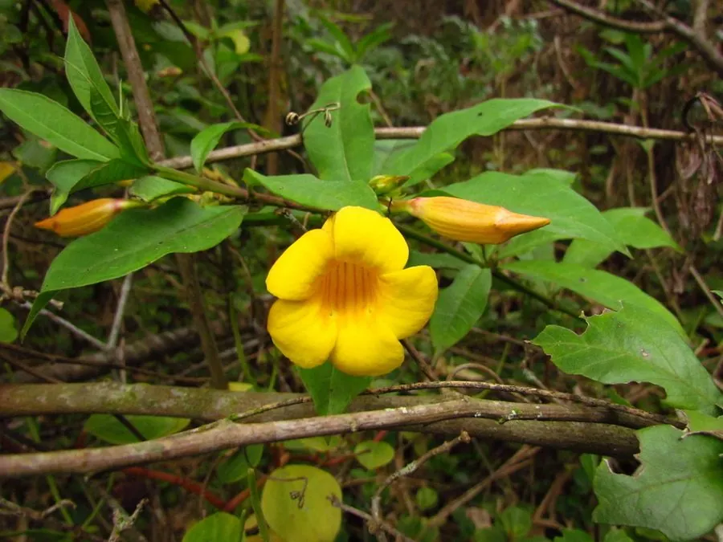

花卉与草本 · 植物界
黄蝉 Allamanda schottii

夹竹桃科黄蝉属常绿灌木，花冠金黄色、漏斗状，花期长，是南方庭园常见的观花植物，但全株有毒。
- 分类
- 门被子植物门纲木兰纲目龙胆目科夹竹桃科属黄蝉属
- 栖息环境
- 巴西热带林缘，喜温暖湿润、阳光充足
- 地理分布
- 原产巴西；中国华南、西南及世界热带地区栽培
- 保护级别
- IUCN 暂无评估；栽培广泛，野生种群未受明显威胁
物种志
黄蝉为常绿灌木，高 1–2 米，茎直立、多分枝，含白色乳汁。叶片轮生或对生，椭圆形至倒卵形，长 6–12 厘米，上面深绿色有光泽。花单生或数朵聚生叶腋，花冠漏斗状，金黄色，长 5–7 厘米，花冠檐部 5 裂，喉部有橙红色条纹；蒴果球形，表面具刺，成熟时开裂。
本种原产巴西，喜温暖湿润、阳光充足的环境，在中国华南常作庭园、花境与绿篱植物。它花大色艳、花期长，是热带城市中最常见的黄花灌木之一。黄蝉属于夹竹桃科，全株含黄色夹竹桃苷等强心苷类毒素，乳汁接触皮肤可致红肿，误食可引起呕吐、心律失常甚至死亡，栽培与修剪时需戴手套，并避免儿童与宠物接触。
形态与习性
- 株高1–2 米，茎直立、含白色乳汁
- 花期5–10 月，花金黄色
- 果期秋季，蒴果球形具刺
- 光照喜光，每天需充足直射光
- 水分喜湿润，忌积水
- 土壤肥沃、排水良好的沙质壤土
- 毒性全株含强心苷，误食可致命
趣味知识
- 黄蝉的花冠金黄色、喉部带橙红条纹，开放时像一只金色的小喇叭。
- 它属于夹竹桃科，与夹竹桃一样全株含强心苷，乳汁有毒。
- 黄蝉的果实表面长满软刺，成熟开裂后散出带翅种子。
- 修剪黄蝉时流出的白色乳汁会刺激皮肤，最好戴手套操作。